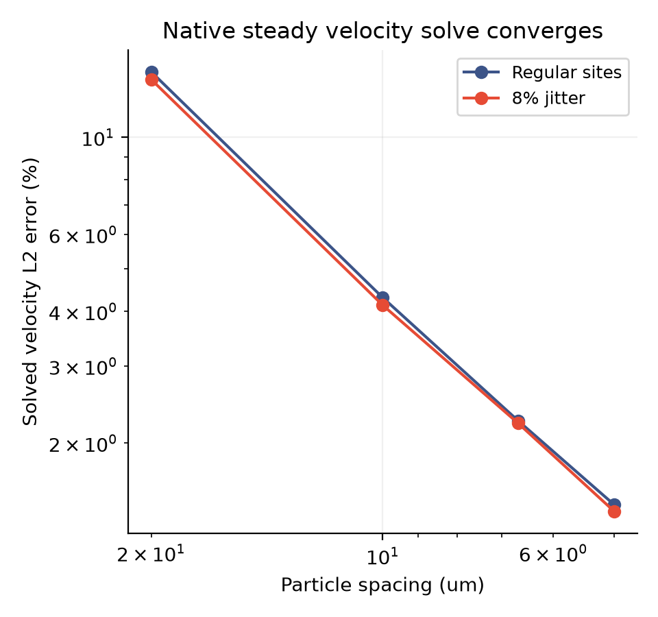
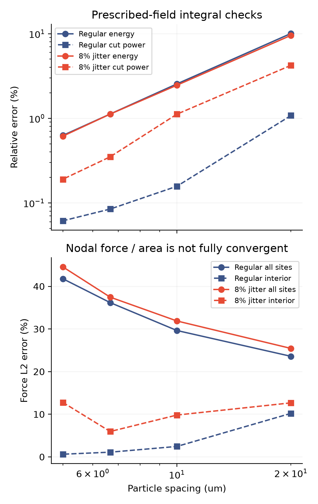
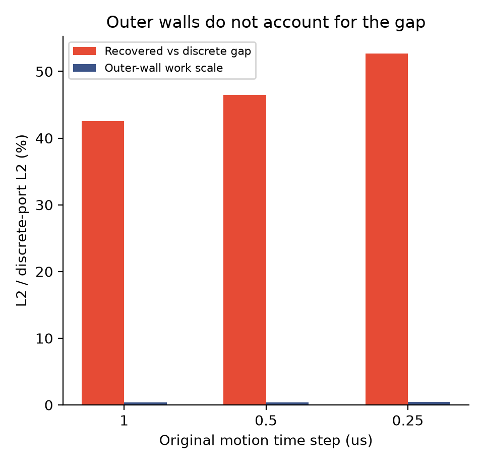

2026-11-13 · 沿着原始排液主线，先检查数值可信度
给模型一道有标准答案的题：
它能算对速度吗？
01 · 为什么多做这道题？
上一轮发现，两种切面传功估计相差约 43%–53%。这次先把复杂运动暂时拿掉，用一个光滑、四周速度为零、答案已知的场检查同一个原生黏性算子。它就像给仪器做标定：先确认它在简单题中是否可靠，再用它解释复杂排液。
运行了 8 个“输入已知速度、检查力和能量”算例，以及 8 个“输入解析体力、真正求解速度”算例。每组都有四级粒子间距，以及规则／8% 扰动两种布局。全部完成，最长单例约 3.5 秒，没有重跑此前的排液轨迹。这里的已知答案检查使用独立切面 x = 201.6 微米，以避开各级网格对齐；原运动算例的物理切面仍是 240 微米。
02 · 真正求出来的速度在收敛
图中横轴向右表示粒子更密。两条线持续下降，说明求出的速度逐渐接近独立解析答案。规则粒子误差从 14.11% 降到 1.44%；扰动粒子从 13.55% 降到 1.39%。所有 8 个线性求解均满足原定残差要求；两个启动算例另经独立 SI／GEOS 算子重建核对。

03 · 能量算对，不等于每个点的力都算对
输入已知速度时，耗散与切面功的误差随加密改善。最细一级的耗散误差约 0.63%／0.61%，离散切面功误差约 0.06%／0.19%。但“节点力 ÷ 节点面积”与连续力的全域误差反而增大；扰动布局的内部力误差也不单调。

这两件事可以同时成立。速度的实际求解检查支持这道静态题中的收敛；它并没有把节点力、连续牵引和区域积分量变成同一个指标。
04 · 原来的切面差异，主要出在哪里？
我们把离散区域传功直接写成黏性双线性形式，再对每个分片重建场做边界积分。64 个保存机械步的两种恒等关系全部核对通过，48 个随机仿射场的积分检查也通过。

05 · 对原始③计划意味着什么？
原始目标仍是从物理出发解释薄膜排液、边缘再生和黑膜，并做实验定量比较。本轮补上了一个更可靠的静态黏性基线，也排除了“仅凭能量闭合就宣布正确”的做法。
接下来检查实际运动中的时间离散：隔离力学与排液分步、后向欧拉惯性数值损失，保持材料常数和原有时空判据。当前变膜厚、移动几何的完整收敛、真实法向通量与实验验证仍待完成。
技术说明、原始数据与复现
- 研究代码与复现脚本
- 公式、解析速度与体力、验证范围
- 64 个保存步的分析协议 · 分析摘要 · 逐步分解数据
- 原生算子检查协议 · 运行与日志路径 · 解析比较
- 实际速度求解协议 · 运行状态 · 速度误差与独立核对
- 原生算子原始数据 ZIP · 原生速度求解原始数据 ZIP
- 48 份原始文件哈希清单 · 恢复与校验脚本
- 最初两次 JSON 格式尝试保存在 首次状态与 第二次状态，不计作物理失败或额外成功算例。
- 参考：HMM 原始论文、SUSHI 原始论文。这是标量扩散背景资料，与当前向量算子的等价性尚未建立。
恢复：python restore_raw.py REPORT_DIRECTORY NEW_OUTPUT_DIRECTORY，脚本拒绝覆盖同名文件。全部原始数据已从分卷逐字节恢复核验。图片提供 PNG 和矢量 PDF，页面可本地打开。